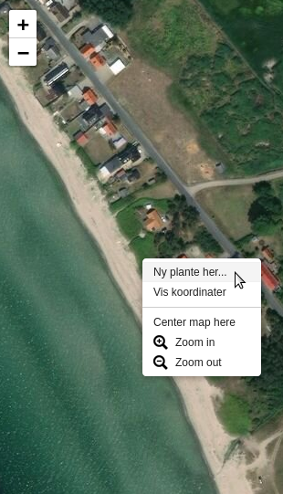
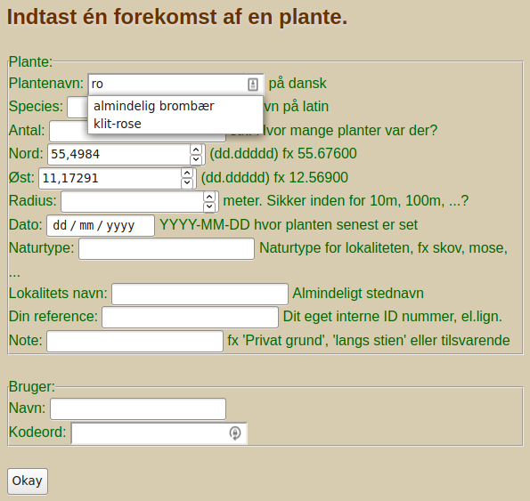
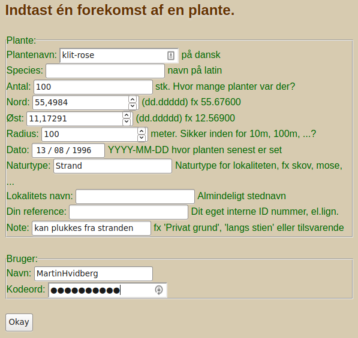
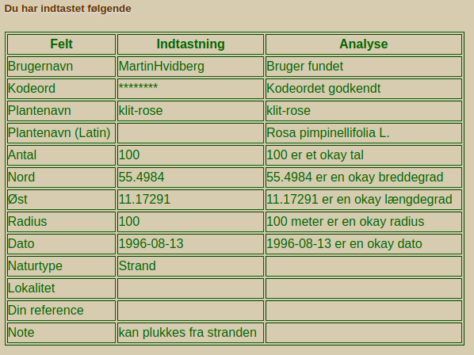

Indtast findested

Den nemmeste måde at indtaste et findested er, ved at højreklikke i
kortet, og vælge det fra menuen. På den måde bliver koordinaten du
klikker på overført automatisk. Du bliver herefter ført til indtastningssiden, og koordinaterne
følger med, så dem behøver du ikke tænke på.
Indtastningssiden

Desuden er der auto-complete så når du taster navnet på en plante, behøver du som regel kun skrive
få bogstaver før den har gættet hvad du tænker på.
Man kan i princippet indtaste et hvilken som helst plantenavn, men
det er kun dem som databasen kender, som bliver vist på kortet.
Indtastningssiden

Udfyld resten af informationerne og klik på Okay-knappen.
Bemærk, man behøver blot at udfylde enten det danske eller det videnskabelig navn, det andet kommer af sig selv.
Indtastningssiden

Du bliver præsenteret for dine egne indtastninger. Computeren
har kontroleret at du har givet meningsfulde informationer, og at dit kodeord er rigtigt, osv.
Hvis du klikker på Okay-knappen igen, så bliver din indtastning puttet i databasen.